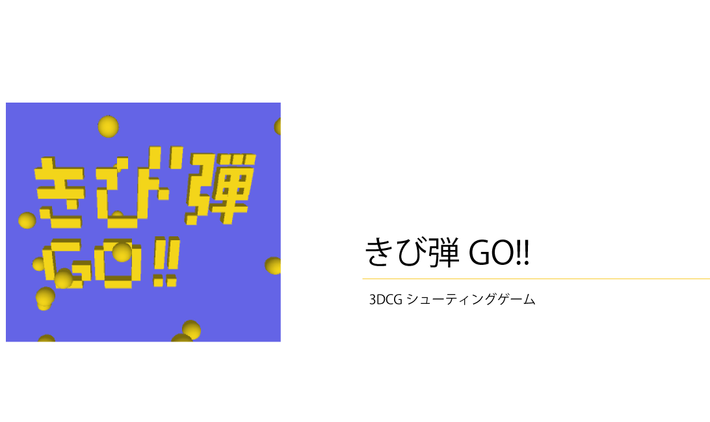

- processingで
- 3DCGのシューティングゲーム
-
processingで3DCGによるシューティングゲームを制作しました。
- プレイヤーがももたろうとなり、きびだんごを投げて動物たちのハートゲージをためて仲間にしていく。
最後はボス(!?)のゴジラが登場！！果たしてみんなを仲間にすることはできるのか！？

- オープニング
- OP画面。きびだんごが四方八方から飛び交う中にタイトルの文字"きび弾GO!!"が空中に浮かび上がっている。クリックすると次の画面に移る。

- 犬
- 犬が登場する。きびだんごを当ててハートゲージをためる。ゲージが満タンになると次の画面に移る。

- 猿
- 猿が登場する。犬と同じてようにしてゲージを満タンにすると次の画面に移る。

- 牛
- 牛が登場する。これまでと同じてようにしてゲージを満タンにすると次の画面に移る。

- ゴジラ(ボス)
- ボスであるゴジラが登場する。体の中心付近にある急所を狙いゲージを貯めていく。

- クリア
- ゴジラのゲージを満タンにするとゲームクリアとなる。登場した動物たちがすべて集合し楽しそうにジャンプしている。
- クリックできびだんごを投げる！
- ー クリックすると手からきびだんごが発射される
- ハートゲージ
- 動物のごきげんゲージ。きびだんごを与えられると上がり、３個で満タンになる。
- 動物
- 犬→猿→牛→ゴジラの順で登場する。
- 手
- この位置からきびだんごが発射される。
- 完成
- ↑
- それぞれの動物の場面をつなげる
- ↑
- 当たり判定をつける
- ↑
- 動きをつける
- ↑
- ゲームの流れ決定
- ↑
- 動物パーツ制作
- ↑
- テーマ決定
- ↑
- アイデア絞る
- ↑
- アイデア出し